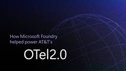

Microsoft Azure Blog
https://azure.microsoft.com/en-us/blog/
Azure helps you build, run, and manage your applications. Get the latest news, updates, and announcements here from experts at the Microsoft Azure Blog.
フィード

AT&T and Microsoft scale trillion-token workloads with Microsoft Foundry and AMD
Microsoft Azure Blog
AT&T processed approximately one trillion tokens while developing OTel2.0 using Microsoft Foundry Managed Compute, open AI models, and AMD and NVIDIA GPU infrastructure. Discover how flexible model choice and scalable infrastructure are enabling production-scale telecom AI.The post AT&T and Microsoft scale trillion-token workloads with Microsoft Foundry and AMD appeared first on Microsoft Azure Blog.
1日前

Azure Databricks delivers proven business value
Microsoft Azure Blog
Microsoft Azure Databricks delivers the first-party advantage of Databricks on Microsoft—and for customers, that advantage shows up as real, measurable value. It is the same Databricks platform your teams already know, co-engineered with Microsoft and delivered as a native Azure service, so it fits naturally into the Microsoft tools, identity, and governance your organization already runs.The post Azure Databricks delivers proven business value appeared first on Microsoft Azure Blog.
9日前
Frontier models and production agents: Advancing Microsoft Foundry for the agentic era
Microsoft Azure Blog
Introducing OpenAI's latest frontier model series, the Asia Pacific Data Zone, and product agent capabilities, all generally available in Microsoft Foundry.The post Frontier models and production agents: Advancing Microsoft Foundry for the agentic era appeared first on Microsoft Azure Blog.
15日前
Built to bounce back: How Azure resiliency evolved
Microsoft Azure Blog
Cloud resiliency is about ensuring systems can adapt, recover, and keep functioning within real-world constraints.The post Built to bounce back: How Azure resiliency evolved appeared first on Microsoft Azure Blog.
16日前
External key management for Azure Managed HSM is now in public preview
Microsoft Azure Blog
Azure Key Vault Managed Hardware Security Module (HSM) provides strong sovereignty over your encryption keys. Keys are generated and stored in a single-tenant, FIPS 140-3 Level 3 HSM that only you control: Microsoft has no access to your key material, and you govern who can use each key.The post External key management for Azure Managed HSM is now in public preview appeared first on Microsoft Azure Blog.
17日前
Meet Brain: The AI system behind Azure reliability
Microsoft Azure Blog
Learn how Microsoft is building a digital twin of Azure Service Health and why it changes how hyperscale operates.The post Meet Brain: The AI system behind Azure reliability appeared first on Microsoft Azure Blog.
22日前
Proving application resilience on Azure with Chaos Studio
Microsoft Azure Blog
Azure Chaos Studio helps organizations validate application resilience by simulating outages, failovers, network disruptions, and infrastructure failures before they impact production.The post Proving application resilience on Azure with Chaos Studio appeared first on Microsoft Azure Blog.
23日前
Azure IaaS: How to design, build, and optimize cloud infrastructure for long-term cost efficiency
Microsoft Azure Blog
As organizations modernize infrastructure, migrate mission-critical workloads, build cloud-native applications, and scale AI—cost efficiency remains a foundational principle of cloud architectures.The post Azure IaaS: How to design, build, and optimize cloud infrastructure for long-term cost efficiency appeared first on Microsoft Azure Blog.
24日前
Claude in Microsoft Foundry is now generally available
Microsoft Azure Blog
Claude in Microsoft Foundry is now generally available, hosted on Azure, and running on NVIDIA GB300 Blackwell Ultra, giving teams a faster path from agent experimentation to production.The post Claude in Microsoft Foundry is now generally available appeared first on Microsoft Azure Blog.
25日前
The 2026 Agent Confidence Index: Where 300 builders see real momentum
Microsoft Azure Blog
At Microsoft, building trustworthy AI agents is as critical as building powerful ones. New research from the 2026 Agent Confidence Index shows where teams trust agents today—and why human judgment remains the defining skill in the age of AI.The post The 2026 Agent Confidence Index: Where 300 builders see real momentum appeared first on Microsoft Azure Blog.
25日前